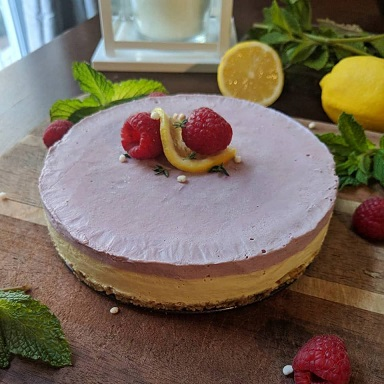

|
Forget Milk and Eggs! Vegan baking hacks 101Whether you are vegan, allergic to eggs or dairy, or are simply looking to make healthier desserts, there are times when the need for a substitute ingredient arises. You'll be happy to know that you can successfully turn most recipes vegan! Good baking relies on practice but most importantly it's about knowing your ingredients and understanding the role they play in your recipe. Click here to learn how to veganize your favourite desserts! |
Essentials every vegan baker should have in their kitchen!With a little guidance, stocking up your pantry with vegan baking essentials should be a breeze! I have compiled a list of supplies to get you started! |
|
|  |
Rasberry Lemon Cheesecake recipeNow that you know a little bit more about vegan baking, I welcome you to try my delicious and healthy Raspberry Lemon cheesecake recipe! Click here to get started! |